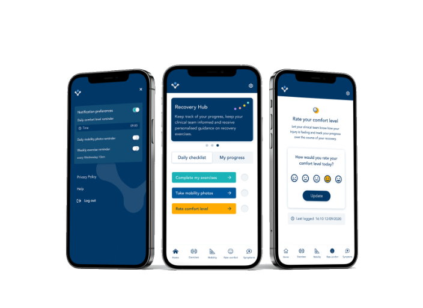

Digital Health Platform Development
On my journey through building digital health products I have navigated several key stages.
Idea FormulationBehind every innovation lies a robust idea. With tools like business model canvas & pitch decks, our aim was speed, clarity & communication. It involved teamwork between clinicians, designers, developers, and strategists
Feasibility AssessmentTesting the waters before diving in. Feasibility studies, local & UX prototypes guided us to see if the product could thrive in the real world. Research was key here.
MVP CreationMVPs showcase core functions. Creation is an art & science mix, fuelled by user feedback & tech expertise.
Accuracy ValidationValidating against gold standards ensures tools stand tall & reliable. In our case collaborations with research bodies were pivotal.
Regulatory AdherenceRegulations play a hauge part in this sector. It's about ensuring safety & alignment with requirements. With so many different standards it can be difficult to know which regulations apply, and can be very easy to get bogged down. Knowledge of regulatory affairs is essential.
Service ComplianceMeeting specific service benchmarks, especially within the NHS framework, like Cyber Essentials, DSP Toolkit, DTAC, etc., makes integration smoother.
Value ValidationProving the product's worth in real-world settings is essential for procurement and tenders. This might mean offering it for free initially & capturing its impact through studies.
ProcurementRegistration on appropriate frameworks ensures the product is accessible for procurement teams, marking a crucial step in the journey.
Adoption & ReimbursementThe dream… The tool becoming an NHS staple. This stage is shaped by budget cycles, decisions, & the product's evidence strength.
ConclusionThe road to embedding a digital health solution in the NHS is dotted with learning curves & milestones. Every step was an opportunity to learn. Each refined our products, making patient care ever better.